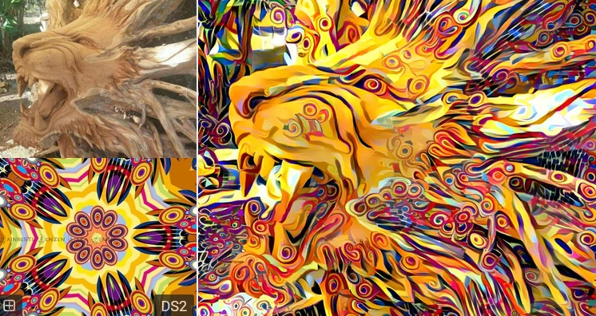
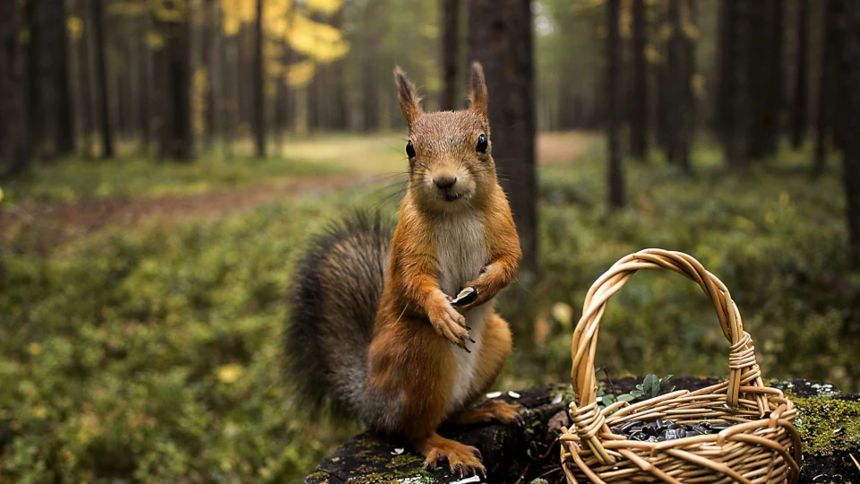
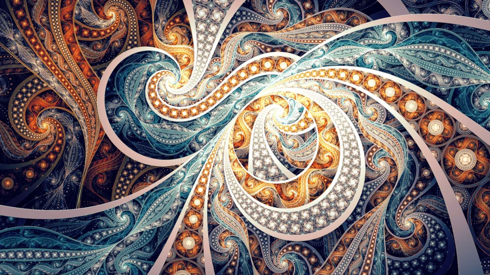
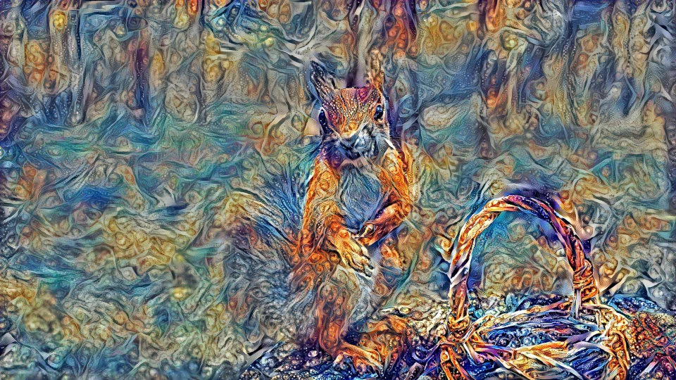
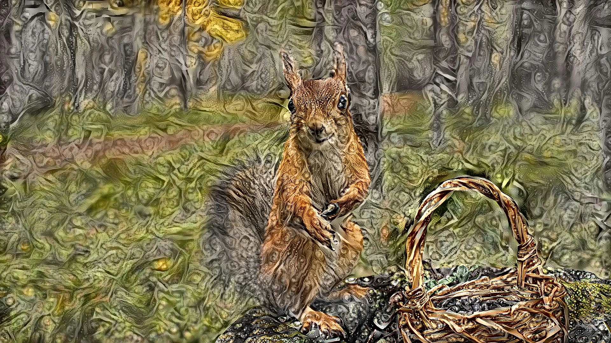

This article explains every step needed to create "deep style" neural art in the style of deep dream generator.com on your own machine.
Deepdreamgenerator.com charges money to create high resolution art, but you can do it at home for free.
Here's an example of their "neural style" - where you combine an input image with a guide (or texture) image: 
There are two types of image merging to differentiate. Originally, Google developed "deep dream", a surreal style that mostly looks like a painting made of shiny dogs.
Later, the "neural style" was created (called "deep style" on deepdreamgenerator.com). This avoids the dogs and looks more like the image above.
At first, you might want to download a virtual machine or Docker image that has all the software you need already configured. There are lots of images available on hub.docker.com if you search for the terms in the last section.
However, the image merge process is highly GPU intensive. If you try to use only your CPU it will take far too long. And trying to install the NVIDIA CUDA framework inside a Docker image inside the WSL was more work than just installing everything on my main machine.
If you want to try get your GPU to work in Docker look at this article.
These are instructions for Windows. If you're using Apple or Linux things should be similar with only a few changes.
Here we go:
lib, bin, and include folders to the corresponding folders in C:\Program Files\NVIDIA GPU Computing Toolkit\CUDA\v11.7.C:\dd and downoad and extract the art library here into it (code - download .zip). Keep this link open, as it contains documentation on the various settings you can tweak to alter your images.C:\dd\images folder.texture.jpg and another called input.jpg into it. I found .webp and .png files didn't work.
Also start with images no bigger than 500KB, or less if you have little RAM. If they work, then try bigger images.winget install python3 # you may have to do this twice to get it to run
python # to test it's installed
exit()
cd c:\dd
pip install -r requirements.txt
cls && python .\neural_style.py --content c:\dd\input.jpg --styles c:\dd\texture.jpg --output c:\dd\output.jpg --iterations 500 --overwritepython .\neural_style.py --content c:\dd\input.jpg --styles c:\dd\texture.jpg --output c:\dd\output.jpg --iterations 1000 --overwrite --style-layer-weight-exp 2.0 --content-weight-blend 0.1 --preserve-colorsHere's an example of my input, texture, and output files (with and without color preservation):
   
We can see that choice of images makes a huge different to the appeal of the output. As do the merge settings.
Finally, I had trouble with images above 1920px resolution running out of memory. I need to investigate if there's a way to do this slower, but with less RAM. Otherwise there's no way to do resolutions detailed enough for large prints.